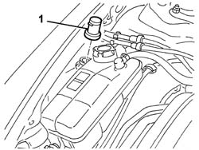

5050A14 RESERVOIR PLUG (IN ENGINE BAY) OR WINDSCREEN WASHER FLUID LEVEL SENSOR - CHECK AND TOP UP IF NECESSARY
- Path
- Procedures > 50 AUXILIARY UNITS > 5050 SCREEN WASHERS AND HEADLAMP WASH/WIPE > 5050A WINDSCREEN AND HEADLAMP WASHER RESERVOIR > 5050A14 RESERVOIR PLUG (IN ENGINE BAY) OR WINDSCREEN WASHER FLUID LEVEL SENSOR - CHECK AND TOP UP IF NECESSARY
- Kind
- repair procedure (removal / refitting; the operation number is the code)
- Applies to
- engines: 2.0 JTS, 3.2 V6, 1.9 JTD 16V; all production periods
- Interactive page
- https://sloeber94.github.io/elrnDB-aGt/en/#/125001562
Applies to: engines: 1.9 JTD 16V; all production periods
Refer to op.. 7025A12 Engine front sound insulation COVER - R.R.
Refer to op.. 7025A14 Bonnet LID - R.R.
Applies to: engines: 2.0 JTS, 3.2 V6, 1.9 JTD 16V; all production periods
Open the bonnet lid.
1. Remove the cap from the tank.

Applies to: engines: 2.0 JTS, 3.2 V6, 1.9 JTD 16V; all production periods
Check that the cap and filler are not damaged and that the filter is not blocked.
Fit the cap and filler in the housing.
Applies to: engines: 1.9 JTD 16V; all production periods
Refer to op.. 7025A14 Bonnet LID - R.R.
Refer to op.. 7025A12 Engine front sound insulation COVER - R.R.